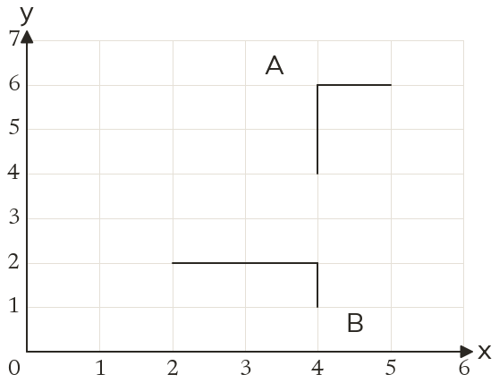

Westonbirt Maths · Transformations and Enlargements
Describing Transformations
Name: ______________________ Date: ____________
1
A half turn maps onto Describe the rotation fully.
2
An enlargement maps a side of cm onto a side of cm, on the same side of the centre. Find the scale factor.
3
An enlargement maps onto and onto Describe it fully.
4
An enlargement maps onto and onto Describe it fully.
5
Describe fully the single transformation that maps A onto B.
Ext
Show that an enlargement by scale factor centre does the same to as a half turn about
